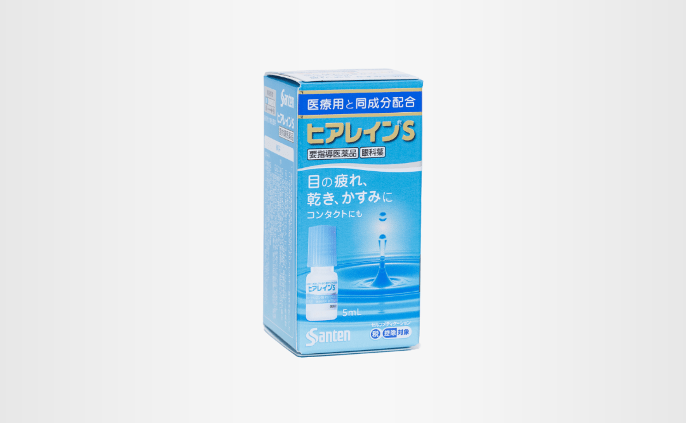

ピックアップ商品
ロキソニンS
「ロキソプロフェンナトリウム水和物」が、痛みや熱の原因物質をすばやく抑え、すぐれた鎮痛効果・解熱効果を発揮します。
1回1錠で痛みに速く効く。
ロキソニンSテープ
医療用ロキソニンテープと同成分。 つらい肩・腰の痛みの芯まで直接浸透して効く。

リアップX5プラス
「壮年性脱毛症における発毛、育毛及び脱毛（抜け毛）の進行予防」を効能・効果に持つ男性用発毛剤（第1類医薬品）です。 有効成分ミノキシジルを5％も配合。強く、太く、発毛します。
ガスター10
過剰に分泌した胃酸をコントロールして、胃痛、もたれ、胸やけ、むかつきにすぐれた効果を発揮します。
ヘルペシアクリーム
口唇ヘルペス再発治療薬。抗ウイルス薬アシクロビルを配合した第1類医薬品です。
ヒリヒリ、チクチクをおぼえたら、早めの治療を。
コロナウイルス 抗原抗体検査キット （体外診断用医薬品）
使用目的 鼻腔ぬぐい液中のSARS-CoV-2抗原の検出 （SARS-CoV-2感染の診断補助） 医療用になりますので、購入時に書類にご記入をお願いいたします。
アレグラFX
脳に影響を及ぼしにくいため、眠くなりにくいアレルギー専用鼻炎薬です。 1回1錠、1日2回 の服用で24時間しっかり効きます。
アレジオン
第2世代抗ヒスタミン成分なので、眠くなりにくいアレルギー性鼻炎内服薬です。 1日1回、就寝前の服用で1日長く効きます。
お薬管理ケース おくすり仕分薬
仕切板は入れ替えできますので、1日2～4回の処方に対応できます。 最大28マスに区切る事ができ、1マスは分包紙サイズで便利です。 仕切板を外すと軟膏容器等も収納できます。 軽量・フタ付きで積み重ねが容易です。
新アスベン
くせにならない便秘薬(ウルソ＋7種類の生薬)。 自然の生薬が主成分なので、常用されても副作用の心配もありませんし、クセになって服用量が増えていってしまうこともありません。
太田胃酸
自然（生薬）の良さを生かした、長年愛用されている総合胃腸薬。 7種の健胃生薬が弱った胃を元気に。
御岳 百草丸
食べ過ぎ、飲み過ぎ、さらに生活習慣の複雑化によるストレス、精神的疲労、不安などによって胃腸の不調、不快感、機能の衰えなどが起こりがちです。胃の変調を感じたとき、胃の働きの正常化をはかり、保護することが大切です。 御岳百草丸は、健胃生薬からできた苦味健胃薬で、胃腸に作用し、胃腸の機能を高め、胃弱、消化不良、食欲不振、胸やけ、飲み過ぎなどを改善します。
タイワ ケシノールシロップ
4種類の生薬配合でどうしても止まらないガンコな咳に。
液体なのですばやく効く。10mlの小容器で服用しやすく緊急な場合や外出の際の携帯に便利。
金蛇精
更年期以降における全身倦怠・視力減退・記憶力減退、男性機能低下を改善します。 男性ホルモン＋動物性・植物性生薬配合。ビタミン剤や強壮薬では「いまいち」の方に。
ジンホル
女性のための保健薬。 冷え・頭痛・血行不良などにすぐれた効果を発揮します。
薬用フタアミンhiクリーム
皮膚にうるおいを与え24時間保湿します。 無臭性で刺激感がまったくなくクリーム自体も延びが良くベタつかないので全身用としてもお使いいただけます。 色々な場面での肌荒れを防ぐには絶対おすすめです
フタアミンhiローション
弱酸性・無香料・アルコールフリーの「しっとりタイプ」の化粧水です。 エタノールを使用していませんので、エタノールに敏感な方でも安心です。お顔のお手入れだけでなく、ボディローションとしてもお使いいただけます。乾燥しがちな季節の保湿にどうぞ。
アレルビ
近年、花粉やハウスダストなどによるアレルギー性鼻炎の方が増えています。電車の中や仕事中など鼻みずやくしゃみがとまらないのはつらいものです。 アレルビは、1回1錠、1日2回の服用で鼻のアレルギー症状による鼻みず、鼻づまり、くしゃみなどのつらい症状を緩和します。
エクエル
「エクオール」は大豆イソフラボンが、腸内細菌の力で変換されて生まれる成分。 この「エクオール」は、女性の健やかさと、美しさを保つ成分として期待されています。年齢を重ねた女性の健康と美容のために摂ってほしいエクオール目安量は1日10mg。 エクエルなら、エクオールを作れる人も作れない人も、1日4粒目安でエクオール10mgを直接摂ることができます。
ハンビロン
即効性ヨヒンビン＋ストリキニーネ 塩酸ヨヒンビン：勃起中枢を刺激して、外陰部の血管を拡張し、血液の流入を促進します。 硝酸ストリキニーネ：脊髄の反射機能を亢進し、わずかな知覚刺激でも強度の反射作用を示す。効能効果：神経衰弱性陰萎、老衰性陰萎、衰弱性射精。
ロキソニンＳクイック
つらい痛みにすばやくよく効く鎮痛成分（ロキソプロフェンナトリウム水和物）を配合した解熱鎮痛薬です。独自の製剤技術（クイックブレイク製法）を採用しており、服用後、錠剤がすばやく崩壊します。 また、胃を守る成分（メタケイ酸アルミン酸マグネシウム）を配合しており、制酸作用と胃粘膜保護作用のダブルアプローチで、胃への負担を軽減します。 眠くなる成分（鎮静成分など）を含まない、1回1錠で飲みやすい小粒の錠剤です。
ロキソニンＳプラス
痛みをすばやくおさえる鎮痛成分のロキソプロフェンナトリウム水和物に、胃を守る成分の酸化マグネシウムをプラス配合したお薬です。
リザレック コーワ
ミノキシジル5％配合の発毛剤。ミノキシジルは当初、経口の高血圧治療薬として開発されました。 服用した患者の一部で多毛症を生じることが見つかり、この副作用を利用してミノキシジル外用発毛剤が改めて開発されました。 ミノキシジル外用発毛剤は、毛包を大きくして毛幹を太くし、毛周期の成長期を刺激・延長させて毛髪を長くし、その数を増やします。
マイティア アイテクト アルピタットN
花粉などによる、つらい目のかゆみに効く！ スイッチＯＴＣ成分配合。 【やさしいさし心地のノンクールタイプ】 花粉などによる目のアレルギー症状は、炎症も引き起こします。 そして、炎症は、目のかゆみだけではなく、異物感※・充血などの症状を悪化（強く感じる）させます。 本商品は、スイッチＯＴＣ成分[クロモグリク酸ナトリウム、プラノプロフェン]を配合しています。
タイレノール
タイレノールAは、主に脳(中枢神経)に作用し、痛みや熱をおさえます。 胃にはもともと、胃酸から胃壁を守るプロスタグランジン(PG)という物質があります。 タイレノールAは、このPGにほとんど影響を与えないため、「空腹時」にものめるやさしさで、効くのです。ただし、かぜによる悪寒・発熱時には、なるべく空腹時をさけて服用してください。
ドリエルEX
自然に近い眠りをサポート 寝つきが悪い・眠りが浅いなどの一時的な不眠症状の緩和に
Wrinkle Cream(リンクルクリーム）
大人の目もと、口もとにハリと潤いを複合体エイジング成分「ダーマキシル2％」を配合するリッチ感のクリームです。年齢とともに気になりだす目もとや口もと、乾燥肌に高い評価をいただいております。

ヒアレインＳ
「涙の不安定さなどからくる「目の疲れ」「目の乾き」「目のかすみ」に効く目薬です。まばたきの減少やコンタクトレンズの装着などにより、涙が蒸発しやすく不安定になると、目の乾きのほか、ものがかすんだように見えづらくなり、さらに「目の疲れ」などの不快な症状を引き起こすことがあります。ヒアレイン®Sに含まれる有効成分ヒアルロン酸ナトリウムは高い保水機能をもっており、目にうるおいを与え「目の疲れ」「目の乾き」「目のかすみ」などの不快な症状を改善します。

海活潤
6つの健康成分配合 牡蠣肉エキス （圧力酵素分解)： 豊富な栄養から「海のミルク」とも呼ばれています。従来の牡蠣肉エキスよりもアミノ酸や亜鉛を多く含んでいます。 しじみエキス： いろいろに役に立つオルニチンが含まれています。 ホヤ： タウリンやグリコーゲンを豊富に含みます。 クリルオイル： 魚油由来のものより吸収性が優れたＤＨＡ、ＥＰＡに加えて、アスタキサンチンも含んでいます。 ＤＨＡ： 重要なn-3系必須不飽和脂肪酸です。 ＥＰＡ： 水産生物に特有な脂質を構成する高度不飽和脂肪酸の一種です。 認知症予防、血栓予防、肝機能向上などに役立ちます。
養命酒製造の黒酢
保険薬局専売の、原材料にこだわった黒酢飲料 中央アルプス生まれの極軟水、国産米を使って醸造された米黒酢、国産クロモジエキスや果物の「女王」マンゴスチンのエキスなど、こだわりの原材料を用い、長野県産のまろやかなリンゴ果汁で美味しく仕上げました。 １日25mlを目安に、原液のまま、またはお好みで水や炭酸水などで割ってお飲みください。酢豚やピクルスなどの料理にも使えます。
液剤 外用ホルモン塗布剤 オットピン
オットピンは男性ホルモン（メチルテストステロン）を補給する医薬品精力剤です。医薬品ですので、余計な麻痺剤も刺激剤も使われていません。 後年による男性ホルモン（テストステロン）の分泌力不足を補います。しかも、オットピンは男性ホルモン（メチルテストステロン）の含有率は日本で１番！（１ml中２０mg）
アレッポの石鹸（ノーマル）
オリーブオイル90：ローレルオイル10 しっとりと突っ張らないオリーブオイルを90%と、清々しい香りのローレルオイルを10％使用、ニキビやアセモを防ぎ、不快臭やフケを抑えます。アレッポ伝統の配合でアレッポの石鹸を代表する定番、頭の先から爪先までこれ一個、しっとりとつっぱらず潤いを残します。
アレッポの石鹸（エキストラ）
オリーブオイル60：ローレルオイル40 ローレルの清々しい香りは不快臭・フケ・かゆみを抑え森林浴をしたかのような心地に。しっとりとして突っ張らず独特の潤いを残しつつも清々しい余韻。特に洗髪をした時の爽快感はエキストラ40ならではのものがあります。全身はもちろん、洗髪にもおすすめです。
アレッポの石鹸（ライト）
オリーブオイル98：ローレルオイル2 しっとりとつっぱらず自然な肌に。オリーブをたっぷりと使用したアレッポの石鹸ライト。 アレッポ伝統の製法でオリーブオイルに含まれる保湿成分を多く残し、しっとりとつっぱらず軽い洗い上がりでお肌を健康に保ちます。洗顔・手洗い・全身洗いにおすすめ、気軽に何にでもご使用いただけます。